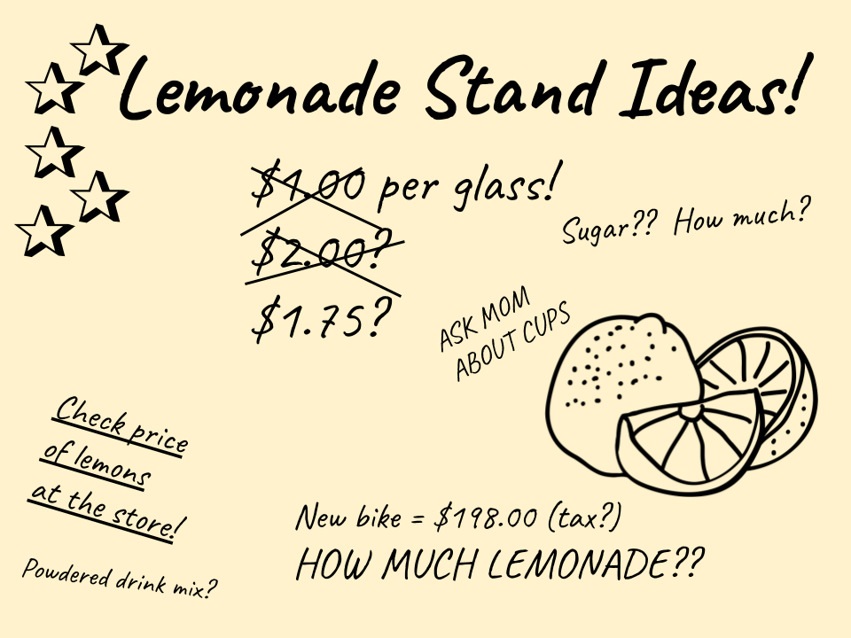

Problem Decomposition
change
Students take a closer look at how functions can work together by investigating the relationship between revenue, cost, and profit.
|
Lesson Goals |
Students will be able to:
|
|
Student-Facing Lesson Goals |
|
|
Materials |
|
|
Preparation |
|
|
Key Points for the Facilitator |
|
function-
a relation from a set of inputs to a set of possible outputs, where each input is related to exactly one output
| Problem Decomposition | 30 minutes |
Overview
Students are introduced to word problems that can be broken down into multiple problems, the solutions to which can be composed to solve other problems. They adapt the Design Recipe to handle this situation.
string-length(num-sqr, +, -, /)
Launch
Display the following image:

{kind=link}
Notice and Wonder Have students share everything they notice about the situations described above. Then, separately, have them share what they wonder. |
One example of a relationship we can find in this situation is that Sally takes in $1.75 for every glass she sells: revenue = \$1.75 × glasses
What other relationships can you find here?
(Give students a chance to discuss and brainstorm)
-
Every glass sold brings in $1.75 in revenue
-
Every glass sold costs $0.30 in costs, such as lemonds, sugar and water
-
Every glass sold brings in some amount of profit: it costs a certain amount to make, but it brings in another amount in revenue
Investigate
Students form groups and brainstorm their ideas for functions. Students can use any strategies they’ve learned so far.
Strategies for English Language Learners MLR 7 - Compare and Connect There are several correct ways to write the functions needed for Sally’s Lemonade. Have students compare methods and develop understanding and language related to mathematical representation and methods. What are the advantages of the different solutions? What are some drawbacks? |
-
What is the difference between revenue and profit? Revenue is the total amount of money that comes in, profit is the remaining money after cost has been subtracted.
-
How could Sally increase her profits? By decreasing her costs, raising her prices (which increases revenue), by selling more lemonade.
-
What is the relationship between profit, cost, and revenue? Profit = Revenue - Cost
Students work with their partners to develop their function models for revenue, cost, and profit, using the Design Recipe.
While students are working, walk the room and gauge student understanding. There is more than one correct way to write the profit function! Encourage discussion between students and push students to develop their thinking on the advantages and disadvantages of each correct solution.
Synthesis
This activity started with a situation, and students modeled that situation with functions. One part of the model was profit, which can be written several ways, for example:
fun profit(g): (1.75 * g) - (0.30 * g) end
fun profit(g): (1.75 - 0.30) * g end
fun profit(g): 1.45 * g end
fun profit(g): revenue(g) - cost(g) end-
Which way is "best", and why?
-
If lemons gets more expensive, which way requires the least amount of change?
-
If sugar gets less expensive, which way requires the least amount of change?
Big Ideas
-
profitcan be decomposed into a simple function that uses thecostandrevenuefunctions. -
Decomposing a problem allows us to solve it in smaller pieces, which are also easier to test!
-
These pieces can also be re-used, resulting in writing less code, and less duplicate code.
-
Duplicate code means more places to make mistakes, especially when that code needs to be changed.
| Top-Down vs. Bottom-Up | 20 minutes |
Overview
Students explore problem decomposition as an explicit strategy, and learn about two ways of decomposing.
Launch
Top-Down and Bottom-Up design are two different strategies for problem decomposition.
Bottom-Up: start with the small, easy relationships first and then build our way to the larger relationships. In the Lemonade Stand, you defined cost and revenue first, and then put them together in profit.
Top-Down: start with the "big picture" and then worry about the details later. We could have started with profit, and made a to-do list of the smaller pieces we’d build later
Investigate
Consider the following situation:
Jamal’s trip requires him to drive 20mi to the airport, fly 9,000mi, and then take a bus 6mi to his hotel. His average speed driving to the airport is 40mph, the average speed of an airplane is 575mph, and the average speed of his bus is 15mph.
Aside from time waiting for the plane or bus, how long is Jamal in transit?
This can be decomposed via Top-Down or Bottom-Up design. What functions would you define to solve this, and in what order? For extra credit, you can actually compute the answer!
Synthesize
Make sure that students see both strategies, and have them discuss which they prefer and why.
These materials were developed partly through support of the National Science Foundation,
(awards 1042210, 1535276, 1648684, and 1738598).  Bootstrap by the Bootstrap Community is licensed under a Creative Commons 4.0 Unported License. This license does not grant permission to run training or professional development. Offering training or professional development with materials substantially derived from Bootstrap must be approved in writing by a Bootstrap Director. Permissions beyond the scope of this license, such as to run training, may be available by contacting contact@BootstrapWorld.org.
Bootstrap by the Bootstrap Community is licensed under a Creative Commons 4.0 Unported License. This license does not grant permission to run training or professional development. Offering training or professional development with materials substantially derived from Bootstrap must be approved in writing by a Bootstrap Director. Permissions beyond the scope of this license, such as to run training, may be available by contacting contact@BootstrapWorld.org.